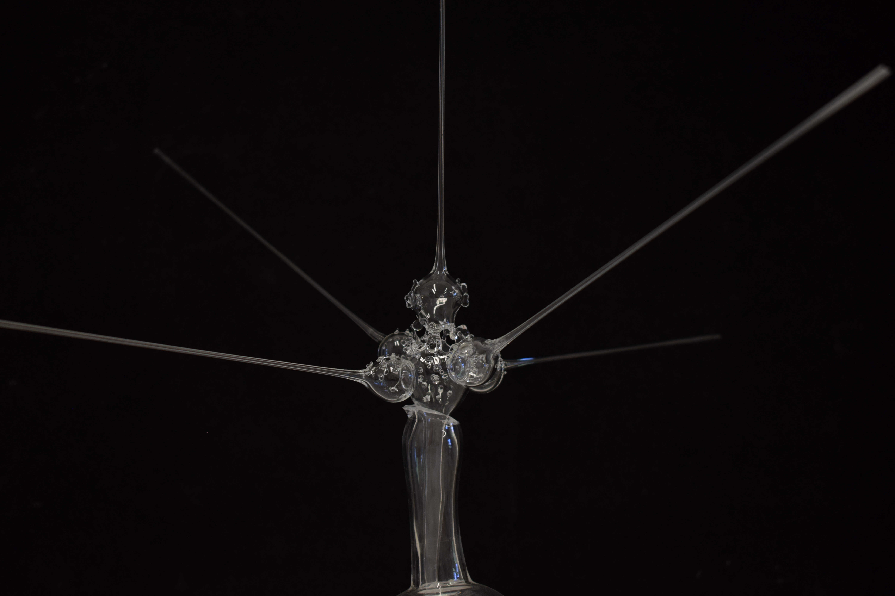
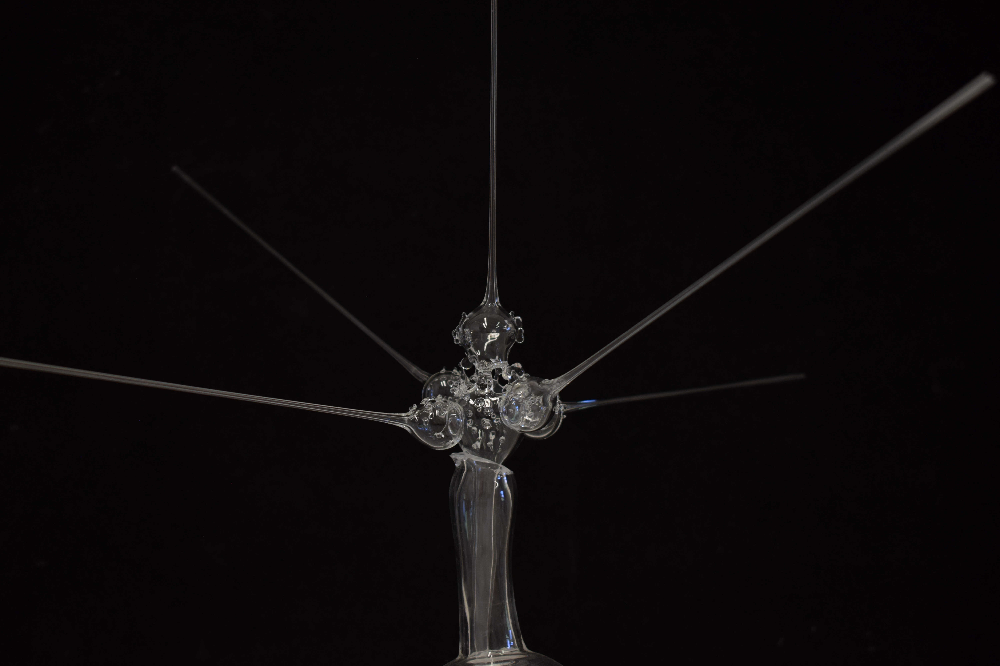
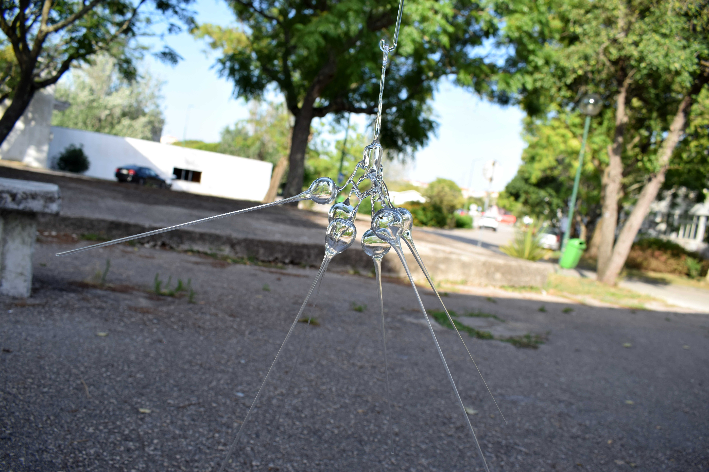
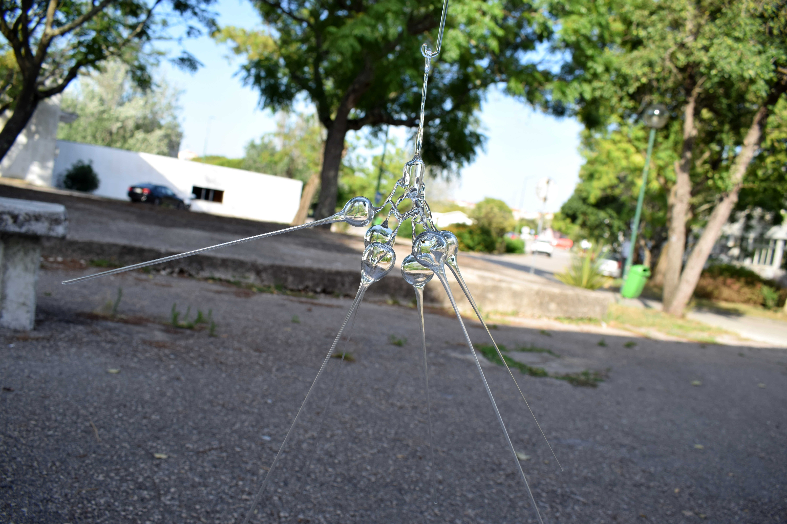

Pablo Díaz
Email: p.tra.zuld@gmail.com
Nationalities: Italian and Chilean

Pablo Díaz is a versatile professional with a diverse background spanning music composition, sound art, and craftsmanship in ceramics and glass. With a Master's degree in Science and Art of Glass and Ceramics from NOVA School of Science and Technology, and a Master's in Sound Art from Universitat de Barcelona, Pablo combines technical expertise with creative skills.
Pablo has many years of experience in various roles including freelance music arrangement, teaching, and collaboration in sound art laboratories. His proficiency extends to advanced knowledge of digital audio workstations, audiovisual software, music notation, and cross-platform tools.
Additionally, Pablo has practical experience with glassworking techniques like glass blowing, fusing, and lampwork, and holds certifications in ceramics craftsmanship and pottery wheel techniques. He has collaborated with institutions like the University of Barcelona and Cerámica Terrablu, showcasing his commitment to artistic and technical innovation.
His passion for music, ceramics, and sound art fuels his continuous exploration and contribution to diverse projects and communities.


 


 
